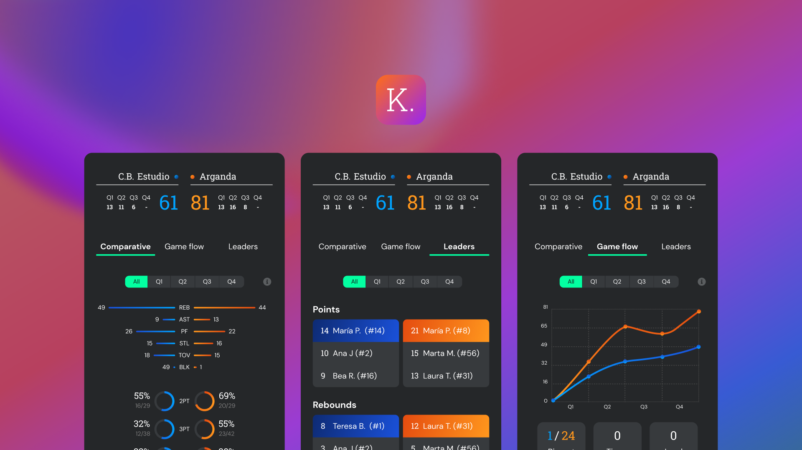
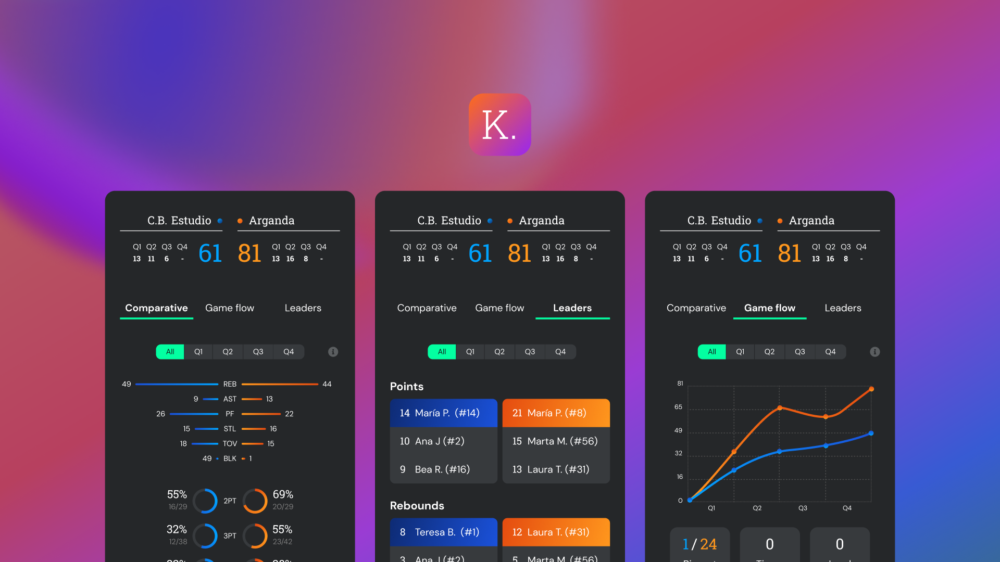
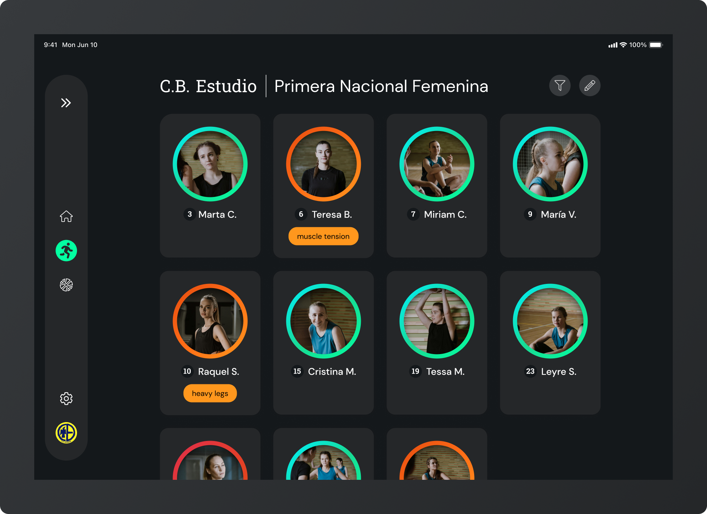
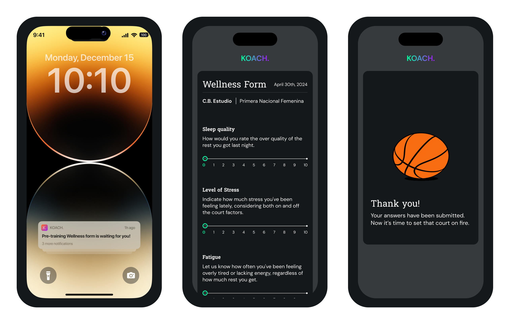
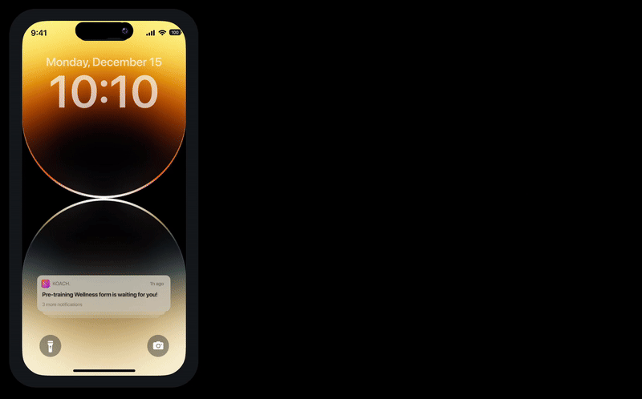
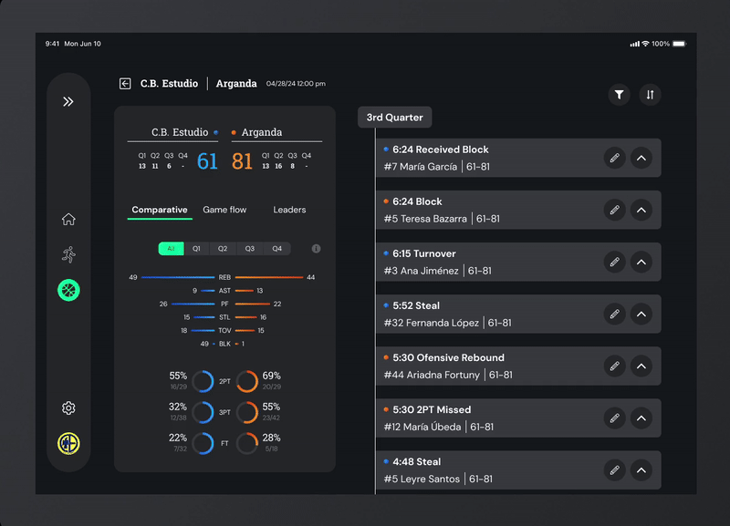

KOACH.
A tablet app for basketball coaches to manage their teams based on data.
- Exploration
- Low-Fi
- Mid-Fi
- Prototype
- Conclusion
Exploratory Phase
To understand the market dynamics, competitive landscape, user personas and needs, I performed extensive desk research, from which I extracted an growing market (the global sports analytics market is expected to grow al least a 23% from 2022 to 2030) and an existing market gap: the performance of mid-level Basketball teams in Spain. Reasons to choose this niche:
- Performance: data in sports is used to optimize either performance (wins) or revenues. While the former affects more stakeholders, the latter is mostly directly critical to club managers.
- Basketball: the size of courts, the impact of a limited number of players at the same time, dynamism of coaches decision-making and continuous data generation makes it perfect for an analytics project.
- Mid-level teams: they care about their results but lack the budget to afford advanced tools.
- Spain: despite being a major league worldwide, it lags behind internationally —as most investment is absorbed by the US— and nationally —as football exlipses it—.
Later on, I planned and carried 8 user interviews, from which I extracted the following conclusions:
- Data gathering is inefficient.
- Mid-level teams are committed to their performance and results.
- There is cross-sectional data available (team, players, rivas...).
- Available tools are limited and too expensive for mid-level teams.
- Coaches lack training in data analytics.
Low-fi Prototyping
Five insights and "How Might We" statements were extracted, for which I designed five low-fi ideas to test their concepts and solutions with five coaches that fitted the target audience:
- HMW automate data gathering for coaches to minimize human errors and thus, improve the quality of their data?
- HMW make data gathering more agile for Basketball coaches to save that time for more impactful tasks?
- HMW facilitate the extraction of conclusions from data for coaches to have a better understanding of that information?
- HMW enrich statistics in sports with greater intangible context to avoid non-quantifiable information from being left out of the analysis?
- HMW help basketball coaches track physical data from their players to prevent injuries and improve their performance?
Mid-fi Prototyping
Thanks to the conclusions from the user interviews, two main concepts are prioritized and upgraded into mid-fi prototypes. A third round of interviews is performed to identify gaps, needs...
Using the MSCW framework, I developed a priorization of features. Plus, I start exploring user flows, system maps...
Final Testable Prototype
The naming chosen is "KOACH", brief, catchy, different and, most important, allowing for future horizontal diversification if the app is aimed at being adapted to different sports. The display font is chosen to remind of vintage and classic basketball gear. Colors are vibrant to transmit the energy of sports, playing with gradients and dark mode, preferred by most coaches interviewed. Plus, the pailette is wide to allow for proper data visualizations. The fundations and components have been systematized.
Below, you will find aswell a series of screens with main flows and interactions, that were used both for a consulting session with an expert in basketball analytics and for my final presentation.
Branding
 

Players Page

Physical Surveys are sent to players' phones
 Matches' timeline
Conclusions
The final testable product was a tablet app that went under the feedback of an expert in basketball analytics. The process and prototype were presented as my final thesis at Parsons School of Design. Some success indicators:
- At least 75% of interviewees expressed interest in the app for their own clubs, without being asked about it. It seemed to solve their needs and concerns, seamlessly and effectively.
- I presented the project in front of a Design Director at IBM Research and a Senior Product Designer at Shopify, receiving very positive feedback. The project was scored with the maximum possible degree.
- I was awarded for it, being featured in Parsons School of Design'd Student Work webpage.
- Back in Madrid, I was asked to present it in front of a famous sports startups accelerator.
- The CEO of a similar product, this case targeted towards football teams, asked me for a consulting session with their Product team to analize and make suggestions to their overall usability.